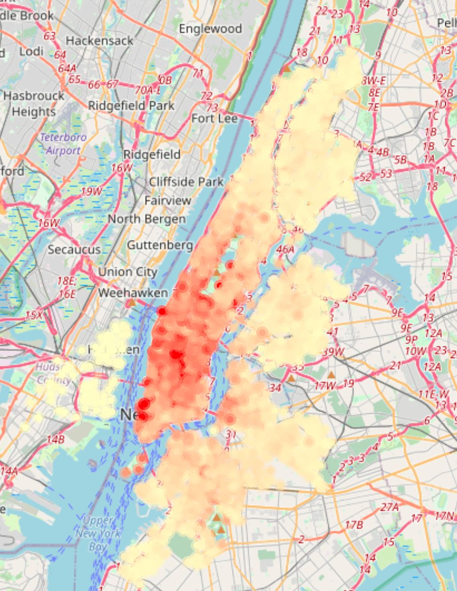

2 Data
2.1 Technical Description
Data Sources and Collection
Our project primarily utilizes data from Citi Bike New York’s bike sharing system. The data, accessible via Citi Bike’s system data and its Live API, encompasses a comprehensive record of bike usage. We have collected all available data from the year 2013 to the present, amassing over 64 GB of raw data, downloading from their bulk data website, and process it in batches and merging various batches into bigger ones due to computational power constraints.

Data Collection Method and Responsible Entity:
Citi Bike, operated by NYC Bike Share LLC, a subsidiary of Lyft Inc, collects the data.
The data collection method isn’t specified in their monthly analysis reports, however it likely obtained through the combination of Citi-Bike app (through Customer Usage) with GPS input embedded on the app, bike and dock tracking sensors each station has. The data includes real-time program data, ensuring current and relevant information.
API data showing current station capacities and status are updated every 5 seconds, while their bulk data showing bike transactions every first day of the month for the past month.
Data Processing and Format
To facilitate our analysis, we developed a custom data processing tool that converts raw data into a structured format suitable for time-series analysis. This process involved tracking hourly inflow and outflow at each of Citi Bike’s 2500+ stations. Our final data-set consists of monthly data frames, each representing around 720 hours (24 hours x 30 days) across all 2500 stations, thus offering a detailed view of bike station usage over time, and we have collected data for 130 months. The data is structured with time (dates for each hour since 2013 until end of October 2023) on the rows and station names on the columns, with each cell indicating the inflow at a specific station and time.


Live API Integration
Additionally, we are leveraging the Live API to monitor real-time station capacities and bike availability, which provides valuable insights into current usage patterns and station dynamics.
Known Data Issues
One of the challenges we’ve encountered is ensuring the accuracy and completeness of the historical data, particularly in the context of station additions, removals, and capacity changes over time. These factors can significantly impact time-series analysis and trend interpretation. We have only kept columns (stations names) that were consistent over the time-frame of our analysis.
Data Importation
Data importation is performed through automated scripts that fetch and process data from both the static data-sets and the Live API, ensuring consistent and up-to-date information flow into our analysis pipeline.
2.2 Research Plan
Linking Data to Research Questions
Our research seeks to uncover and visualize trends in bike-sharing usage across various regions and stations in New York City over time. The structured time-series data enables us to conduct comprehensive analyses, such as identifying peak usage times, understanding seasonal variations, and detecting long-term usage trends.
Utilizing Visualizations
The attached visualization exemplifies our approach. It displays the average hourly inflow traffic frequency at Citi Bike stations since 2013, offering insights into the spatial and temporal patterns of bike usage in New York City. We would like to dig into these patterns and explore how the frequency of usage got affected by time.

Analyzing Live Data
Incorporating real-time data from the Live API allows us to extend our analysis to current usage patterns, further enriching our understanding of the system’s dynamics and assisting in predictive modeling for future trends.
This data-driven approach provides a robust foundation for answering our core research questions about the usage patterns of New York City’s bike-sharing system and contributes to a deeper understanding of urban mobility.
2.3 Missing Value Analysis
In our analysis of the Ci-ti Bike data, we focus on the transformation of raw transaction data into a more aggregated and analyzable format. Each transaction in the dataset represents a discrete bike usage event, with details such as time, location, and duration. To construct a meaningful analysis framework, we aggregate these individual transactions into hourly inflow counts for each station.
Characteristics of Raw Data:
The raw data is transactional, with each entry representing a distinct bike usage event.
This dataset does not contain any ‘NA’ values, indicating a comprehensive record of all transactions recorded by the system.
Transformation Process:
We process this data by summing and filtering transactions to attain an hourly inflow count per station.
This aggregation smoothens the data for time-series analysis, focusing on broader usage trends rather than individual transactions.
Challenges in Missing Data Identification:
A critical limitation of this approach is the inability to distinguish between a non-recorded transaction and a genuine absence of transactions. If a bike is used but the transaction is not recorded due to any system error, it is indistinguishable from a time frame where no bike usage occurred.
Consequently, as data analysts, we cannot definitively assert whether a gap in the data is due to a recording failure or actual inactivity.
Observations of Missing Data:
Upon reducing the transaction data from a per-second basis to an hourly format, we observed gaps in the data, where certain dates appear to be skipped.
These missing values could represent days with extremely low or no activity at specific stations, or they might indicate periods where data was not recorded or collected due to technical issues.

Although there is no documented explanation for the clusters of missing data, our team has hypothesized potential reasons for these gaps, though no clear pattern of missing data is evident.
Region 1 (as shown in the image below) aligns with the lock-down period in New York City during the COVID-19 pandemic, particularly through the summer months. This period likely is missing due to bike usage restrictions due to public health restrictions and changes in commuting patterns, potentially resulting in sparse data during this period.
Region 2, while not technically missing data, represents a period where data is unavailable due to its coincidence with the “leap day” in February, which occurs every four years. This absence is likely a result of the dataset’s structure, which may not account for this quadrennial variation in the calendar.
Region 3 presents a more elusive case. Our research has not uncovered a formal explanation for this data gap. However, the fact that these missing data points consistently occur during winter months leads us to speculate that it might be related to seasonal factors. The hypothesis is that this period could correspond to times when Citi Bike operations are impacted by heavy snow or routine maintenance closures, leading to reduced activity or data recording.